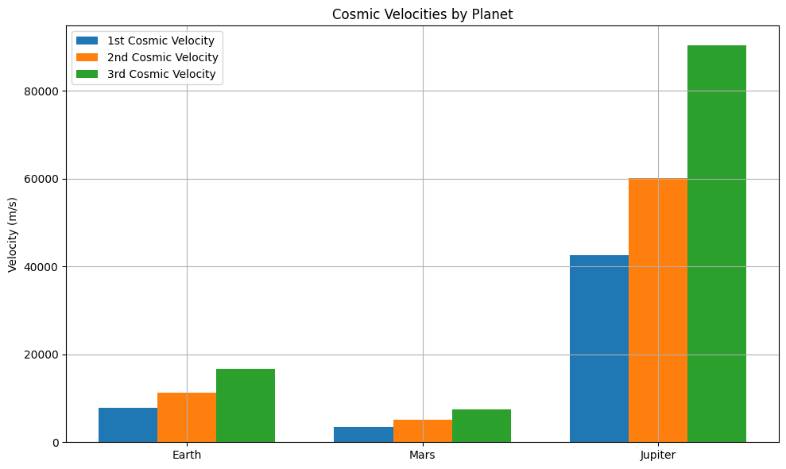

Problem 2
🚀 Escape Velocities and Cosmic Velocities
🧭 Motivation
Understanding escape velocity is crucial for space missions. It's the minimum speed needed to break free from a planet's gravitational pull. Expanding on this idea, the first, second, and third cosmic velocities define thresholds in space travel:
1-Reaching orbit 2-Escaping a planet 3- the Solar System
These are key concepts in satellite launches, Moon/Mars missions, and interstellar probes.
🧠 Definitions
1️⃣ First Cosmic Velocity Meaning: Minimum speed to enter a circular orbit close to the surface of a planet.
Formula:
\(v_1 = \sqrt{\frac{G M}{R}}\)
Where:
\(G\): Gravitational constant = 6.674 \times 10^{-11} \ \text{m}^3/\text{kg}/\text{s}^2
\(M\): Mass of the planet (kg)
\(R\): Radius from the planet's center (m)
2️⃣ Second Cosmic Velocity (Escape Velocity) Meaning: Minimum speed to completely escape a planet's gravity.
Formula:
\(v_2 = \sqrt{2} \cdot v_1 = \sqrt{\frac{2 G M}{R}}\)
Third Cosmic Velocity Meaning: Approximate speed needed to leave the Sun’s gravitational influence from a planet’s surface.
Formula (approximate):
\(v_3 \approx 1.5 \cdot v_2 = 1.5 \cdot \sqrt{\frac{2 G M}{R}}\)
📐 Parameters Affecting Velocity Mass (\(M\)): Heavier planets have stronger gravity → higher velocities.
Radius (\(R\)): Larger radius means you're further from the center → lower velocities.
🧮 Python Code for Calculations & Graphs
import numpy as np
import matplotlib.pyplot as plt
# Gravitational constant
G = 6.67430e-11 # m^3 kg^-1 s^-2
# Celestial bodies: mass in kg, radius in meters
bodies = {
"Earth": {"mass": 5.972e24, "radius": 6.371e6},
"Mars": {"mass": 6.417e23, "radius": 3.3895e6},
"Jupiter": {"mass": 1.898e27, "radius": 6.9911e7},
}
def compute_velocities(mass, radius):
v1 = np.sqrt(G * mass / radius) # 1st cosmic velocity
v2 = np.sqrt(2) * v1 # escape velocity
v3 = 1.5 * v2 # approximate 3rd cosmic velocity
return v1, v2, v3
# Calculate velocities
results = {}
for name, data in bodies.items():
v1, v2, v3 = compute_velocities(data["mass"], data["radius"])
results[name] = {"v1": v1, "v2": v2, "v3": v3}
# Plotting
labels = list(results.keys())
v1_list = [results[b]["v1"] for b in labels]
v2_list = [results[b]["v2"] for b in labels]
v3_list = [results[b]["v3"] for b in labels]
x = np.arange(len(labels))
width = 0.25
plt.figure(figsize=(10, 6))
plt.bar(x - width, v1_list, width, label="1st Cosmic Velocity")
plt.bar(x, v2_list, width, label="2nd Cosmic Velocity")
plt.bar(x + width, v3_list, width, label="3rd Cosmic Velocity")
plt.xticks(x, labels)
plt.ylabel("Velocity (m/s)")
plt.title("Cosmic Velocities by Planet")
plt.legend()
plt.grid(True)
plt.tight_layout()
plt.show()
Print results
| Planet | v₁ (m/s) | v₂ (m/s) | v₃ (m/s) |
|---|---|---|---|
| Earth | 7909.68 | 11185.98 | 16778.97 |
| Mars | 3554.68 | 5027.08 | 7540.62 |
| Jupiter | 42567.51 | 60199.54 | 90299.32 |
🚀 Relevance in Space Exploration Mission Type | Required
Orbital Satellite | \(v_1\)
Planetary Escape Missions | \(v_2\)
Interstellar Missions | \(v_3\)
✅ Conclusion The cosmic velocities define the energy requirements to transition between gravitational zones:
Low Earth orbit needs \(v_1\) Moon and Mars missions need at least \(v_2\) Voyager-style interstellar probes require \(v_3\)

$$
| Planet | v₁ (m/s) | v₂ (m/s) | v₃ (m/s) |
|---|---|---|---|
| Earth | 7909.68 | 11185.98 | 16778.97 |
| Mars | 3554.68 | 5027.08 | 7540.62 |
| Jupiter | 42567.51 | 60199.54 | 90299.32 |